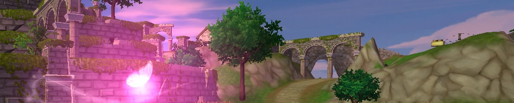
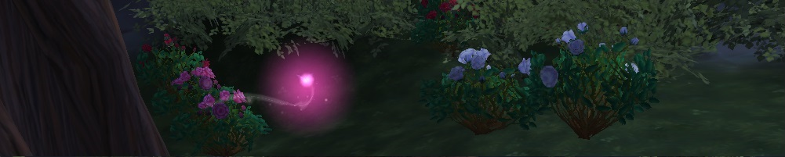
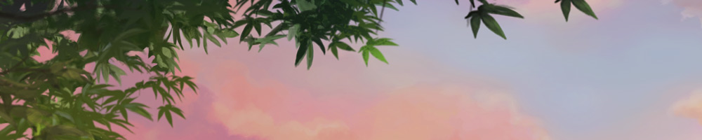
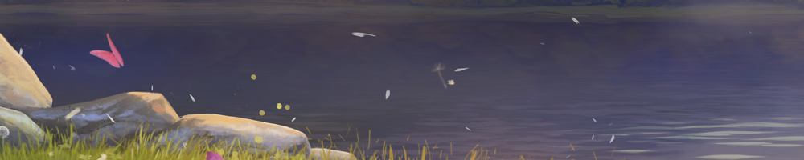

Katriinan muistot jatkuvat

Katriinan muistojen osa2 kaikkine kuvineen ja koordinaatteineen lisätty Oppaat-sivulle. Lisäksi opas-sivuston käyttöliittymää on päivitetty. Sivuilta löytyy nyt linkkipalkki jolla voit
hypätä suoraan haluamaasi alueeseen.
Katriinan muistoja

Oppaat-sivulle on nyt lisätty uuden Katriinan muistot- tehtäväsarjan perhoset kuvineen ja koordinaatteineen. Opas toimii tällä hetkellä parhaiten tietokoneen selaimella.
Tietokannan päivitys

Ratsut-sivun tietokannasta voi nyt etsiä hevosia myös värin perusteella. Haluatko nähdä kaikki valkoiset hevoset jotka osaavat jonkin erikoisaskellajin? Kirjoita ylärivin hakupalkkiin "kimo liike" ja tietokanta näyttää sinulle kaikki sopivat ratsut!
Kuvia

Ratsut-sivulla on nyt lisää hevosia. Haluatko auttaa sivun toteuttamisessa? Voit lähettää kuvia puuttuvista hevosista ja poneista osoitteeseen: info@ssosuomi.fi. Valitse ratsulle rauhallinen tausta, sekä ota kuva ilman varusteita. (Esimerkiksi kotitalli, merenranta tai Eteläkavion niemimaa sopii tähän tilanteeseen erinomaisesti). Laita mukaan hahmosi nimi, mikäli haluat kuvaan vesileiman.
Alpha-versio

Sivuston ensimmäinen versio on nyt julkaistu. Lähitulevaisuudessa sivulta löytyy myös oppaat tähtien, Toksujen ja salaisten paikkojen etsimiseen, kaikkien hevosten tietokanta sekä interaktiivinen Jorvikin kartta. Löysitkö sivulta virheen?
Voit ilmoittaa siitä, tai antaa muuta palautetta kaavakkeen kautta!


{kind=link}
{kind=link}
{kind=link}
{kind=link}